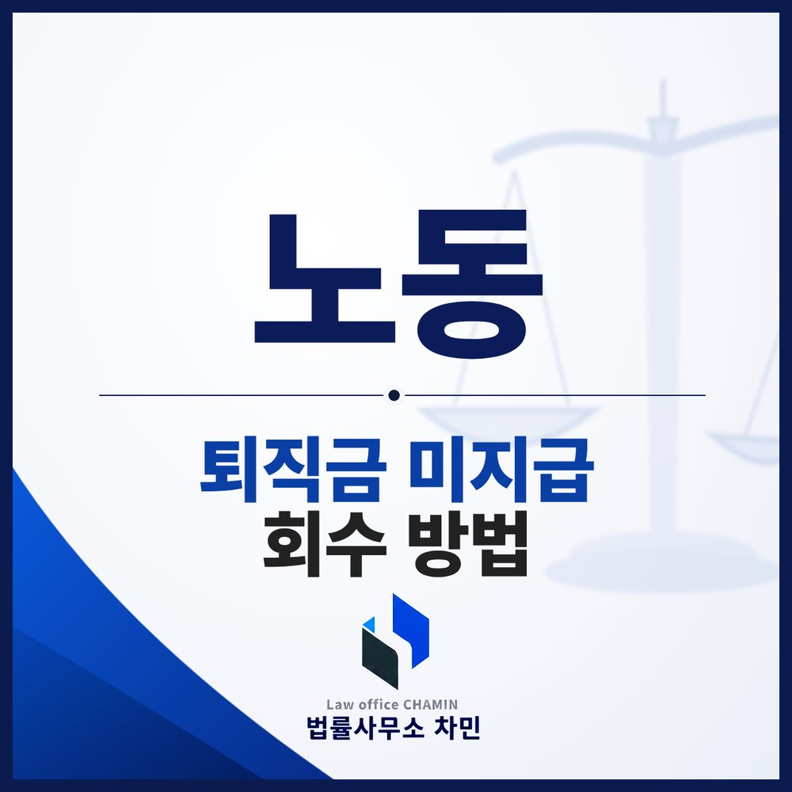

“다음 달에는 꼭 드리겠습니다”라는 말만 반복되고 퇴직금이 들어오지 않는 경우가 생각보다 많습니다. 퇴직금은 다음 직장을 구할 때까지의 생활비인 경우가 많아 더 답답합니다. 퇴직금을 받을 수 있는지부터 실제로 돈을 받아내는 방법까지 정리했습니다.

먼저, 퇴직금 대상인지 확인합니다
같은 사업장에서 계속 1년 이상 일했고, 약속된 근로시간이 4주 평균 주 15시간 이상이었다면 퇴직금 대상입니다(근로자퇴직급여 보장법 제4조). 정규직만 해당하는 것이 아닙니다. 계약직이나 아르바이트도 조건을 갖추면 퇴직금을 받을 수 있습니다. 계약서에 프리랜서로 적혀 있더라도 실제로 회사의 지시를 받으며 일했다면 근로자로 인정될 수 있으므로 계약서 명칭보다 실제 일한 모습을 봐야 합니다.
퇴직 후 14일이 기준입니다
사용자는 근로자가 퇴직하면 14일 이내에 퇴직금을 지급해야 합니다(같은 법 제9조 제1항). 특별한 사정이 있어 당사자가 합의로 지급 기일을 연장한 경우가 아니라면, 이 기간이 지나면 바로 체불이 됩니다.
노동청 진정 — 출발점이지만 끝은 아닐 수 있습니다
14일이 지나도 들어오지 않으면 관할 노동관서에 진정을 넣을 수 있습니다. 근로감독관이 배정되어 회사를 조사하고, 조사가 시작된 것만으로 부담을 느껴 지급하는 사업주도 있습니다.
그러나 모든 사건이 여기서 끝나지는 않습니다. 사업주가 퇴직금 미지급으로 형사처벌을 받더라도, 그 처벌이 근로자에게 돈을 지급해 주지는 않습니다. 회사가 끝까지 버티면 민사 절차로 넘어가야 합니다.
체불 임금등·사업주 확인서는 꼭 받아 두세요
노동청 조사에서 체불이 확인되면 체불 임금등·사업주 확인서를 발급받을 수 있습니다. 이 확인서는 지급명령이나 민사소송을 준비할 때, 간이대지급금을 신청할 때 중요한 자료가 됩니다.
지급명령과 민사소송
퇴직금을 줘야 한다는 점에는 다툼이 없고 회사가 돈만 주지 않는 상황이라면 법원에 지급명령을 신청해 볼 수 있습니다. 지급명령이 확정되면 강제집행이 가능해져, 회사 계좌나 거래처에 대한 채권을 압류하는 방식으로 회수합니다.
회사가 “프리랜서였다”, “월급에 퇴직금이 포함되어 있었다”고 주장하는 사건이라면 처음부터 민사소송으로 가는 편이 나을 수 있습니다. 매월 퇴직금을 나누어 준다는 약정은 원칙적으로 퇴직금 지급으로서 효력이 인정되지 않지만, 회사가 이미 지급한 돈의 반환을 주장하는 경우도 있어 계약서 문구뿐 아니라 실제 근무 방식과 급여 지급 내역을 함께 따져야 합니다.
간이대지급금도 확인하세요
회사가 폐업하지 않았더라도 실제로 퇴직금을 받기 어려운 상황이라면 간이대지급금을 검토할 수 있습니다. 체불 임금등·사업주 확인서가 발급되었거나, 확정된 판결·지급명령 등이 있으면 국가가 미지급 임금과 퇴직급여 중 일정 범위를 사업주 대신 먼저 지급하는 제도입니다(임금채권보장법 제7조). 전액을 받는 것은 아니고 상한액이 있으며, 퇴직 후 언제 진정이나 소송을 했는지 등 요건도 따져야 합니다.
조심해야 할 세 가지
- 돈을 받기 전에 합의서나 처벌불원서를 먼저 써 주지 마세요. “서류부터 써 주면 바로 입금하겠다”는 말을 믿고 서명했다가 약속이 지켜지지 않으면 대응이 어려워질 수 있습니다. 실제 입금을 확인한 뒤 서명하는 것이 안전합니다.
- 퇴사 후 회사 이메일이나 업무 계정에 접속해 자료를 가져오지 마세요. 권한 없는 접속은 오히려 본인에게 법적 문제가 될 수 있습니다. 근로계약서, 급여명세서, 통장 입금 내역, 퇴사 관련 문자처럼 이미 갖고 있는 자료부터 모으면 됩니다.
- 시효는 3년입니다. 퇴직금을 받을 권리는 3년간 행사하지 않으면 소멸합니다(근로자퇴직급여 보장법 제10조). 회사가 기다려 달라고 하더라도 지급 약속은 문자나 이메일로 받아 두고, 약속한 날짜가 지나면 바로 움직여야 합니다.
익산에서 퇴직금을 못 받았다면
퇴직일, 마지막으로 받은 급여, 회사와 퇴직금에 관해 주고받은 연락만 정리되어도 어떤 방법으로 진행할지 빨리 정할 수 있습니다. 익산 지역 사업장의 진정은 관할 노동관서에, 지급명령과 민사소송은 대개 전주지방법원 군산지원에 합니다. 밀린 임금의 계산 방법은 임금체불 소송 칼럼에서, 진정과 고소의 차이는 임금·퇴직금 체불 칼럼에서 정리했습니다.